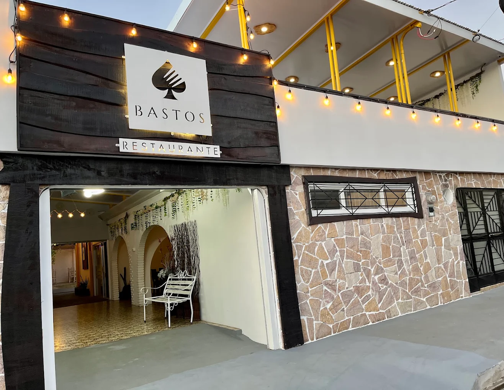
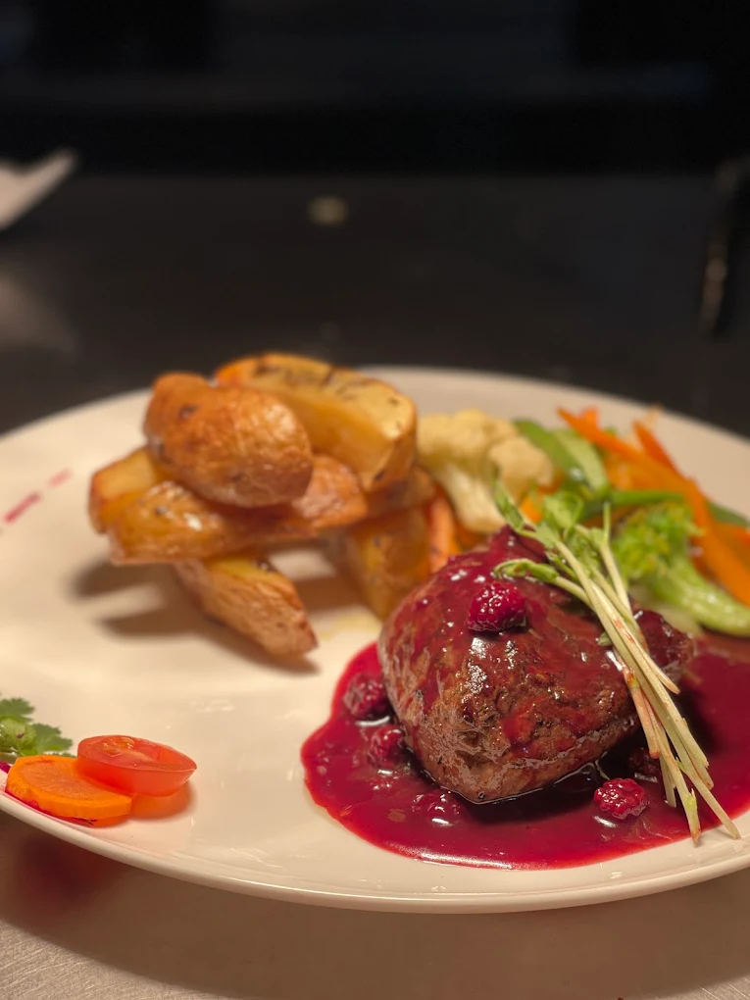
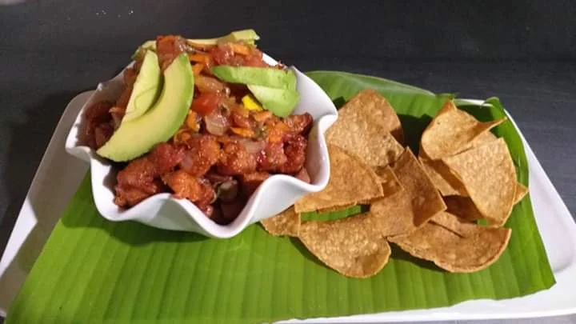
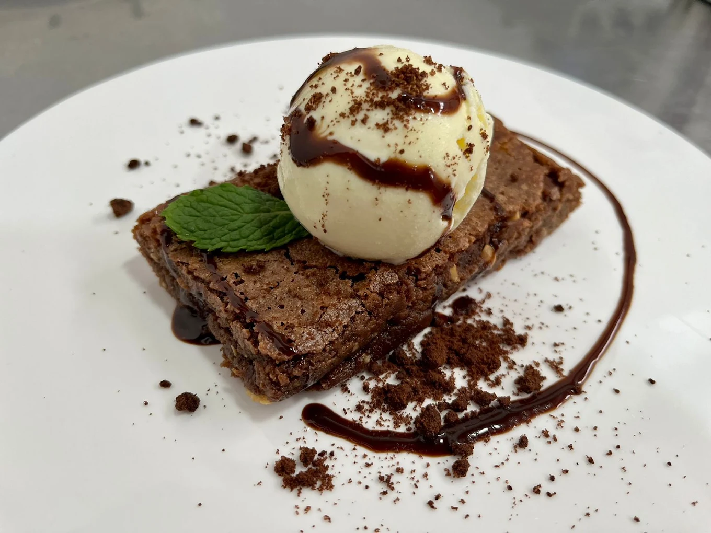

FOTOGRAFÍAS
Descubre Cañas a través de sus sabores
Una selección de fotografías de restaurantes, comidas y espacios gastronómicos locales.





FOTOGRAFÍAS
Una selección de fotografías de restaurantes, comidas y espacios gastronómicos locales.



